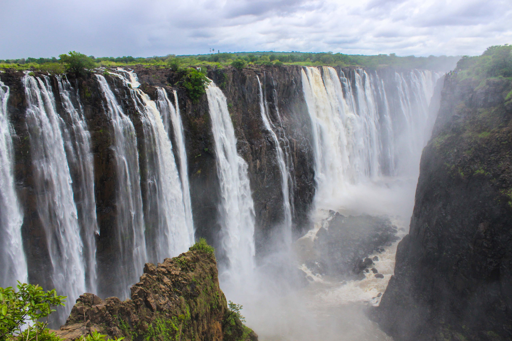
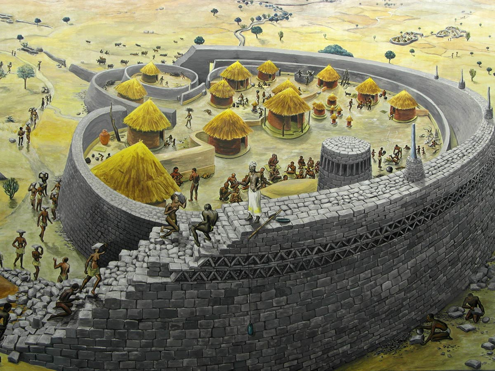
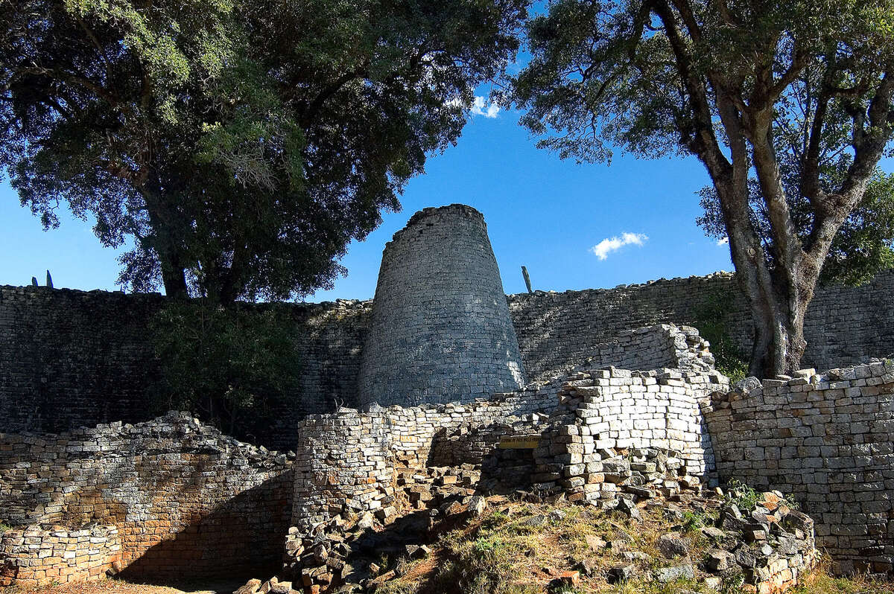

Victoria Falls is one of the largest and most famous waterfalls in the world, known locally as "The Smoke That Thunders."

The Great Zimbabwe Ruins are a UNESCO World Heritage Site and were once the capital of a powerful African kingdom.

Hwange National Park is Zimbabwe’s largest game reserve, home to elephants, lions, and other wildlife.